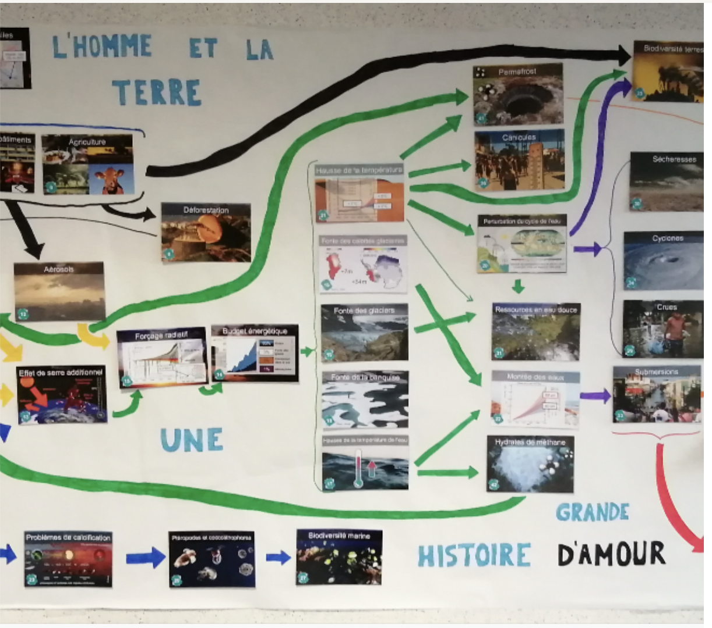
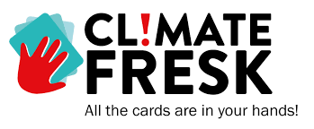
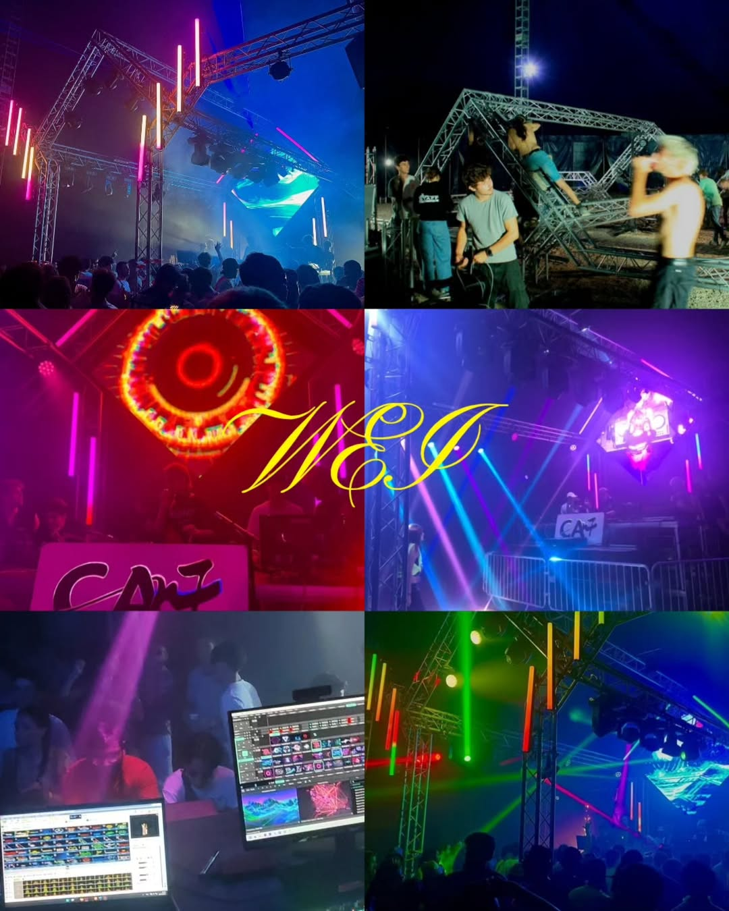
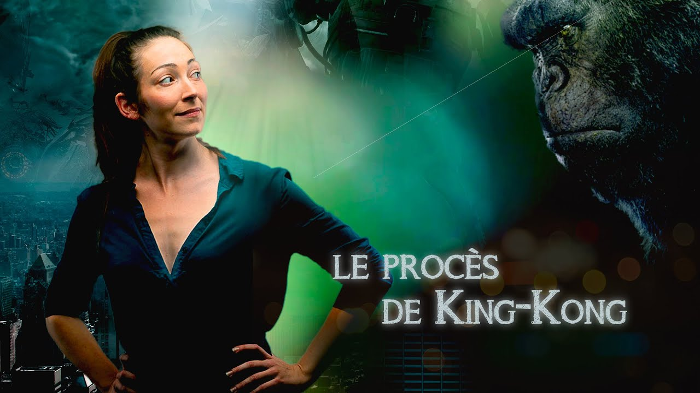
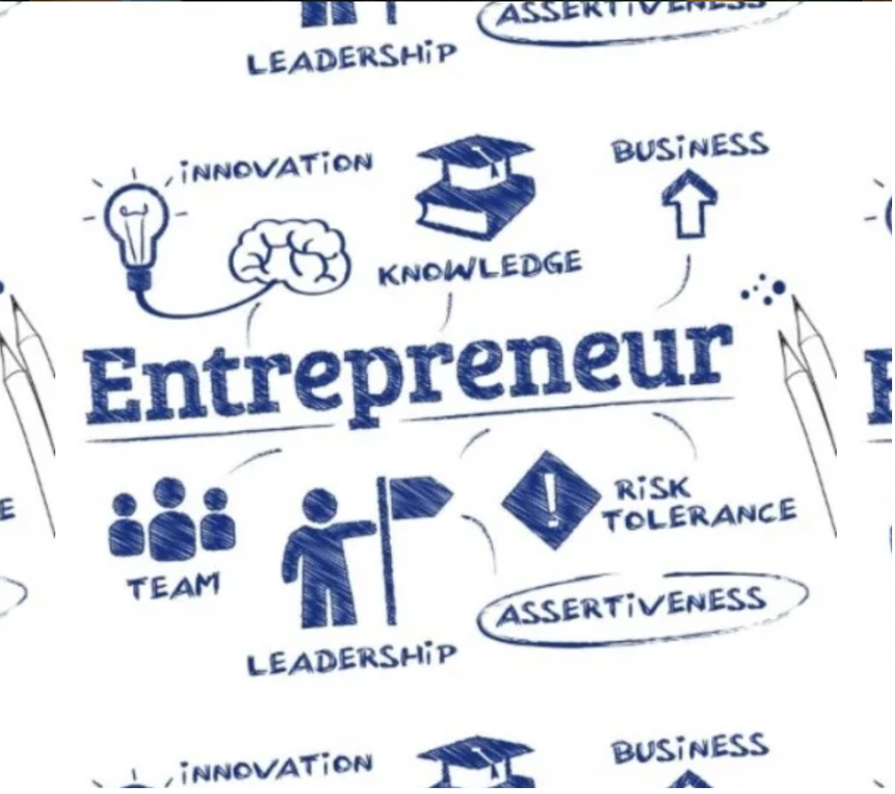
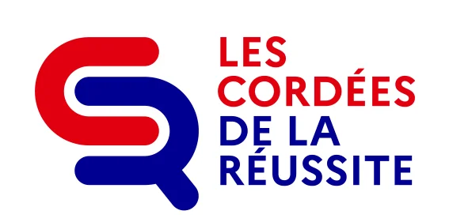

Sustainability & Civic Engagement
Beyond technical skills, I believe engineering requires responsibility: understanding environmental challenges, contributing to inclusive initiatives, and taking leadership roles in collective projects.
Key experiences
This page highlights the experiences where I engaged with sustainability, inclusion and community impact — from awareness workshops to leadership responsibilities inside my school association.

The Climate Fresk workshop helped me connect causes and consequences of climate change in a structured way. It also trained team discussion: each participant summarised cards, debated relationships, and co-built a coherent system-level representation.

Student Association — WEI organiser
I contribute to my school’s student association by helping organise the integration weekend (WEI). This role requires coordination, logistics, risk management, clear communication, and attention to collective well-being.
King Kong — Diversity & Inclusion play
This interactive play addressed consent, sexism and social behaviour through scenes interrupted by a narrator who asked the audience to analyse what was happening. It was a valuable exercise in awareness and collective discussion.


Entrepreneurship
This project required designing a product, studying the market, estimating costs with sources, defining a target customer base, and evaluating profitability. It trained structured thinking and communication of a business rationale.
Tutoring — Equal opportunity
I continue tutoring students from less advantaged backgrounds, helping them build confidence and academic methods. The objective is to support equal access to higher education through regular guidance and encouragement.

What I want to keep building
I want to keep connecting engineering with responsibility: sustainability awareness, inclusive initiatives, and concrete engagement in collective projects where organisation and impact matter.